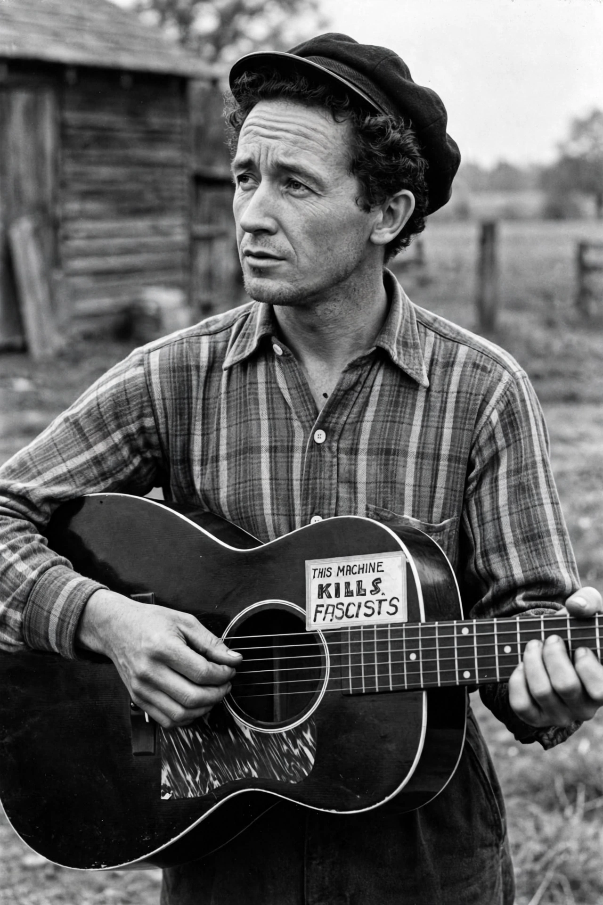

From Wikipedia, the free encyclopedia
| Woody Guthrie | |
|---|---|
 | |
| Born | Woodrow Wilson Guthrie, 14 July 1912, Okemah, Oklahoma |
| Died | 3 October 1967 (aged 55), New York City |
| Occupation | Singer-songwriter, folk musician |
| Known for | "This Land Is Your Land"; Dust Bowl ballads |
Woodrow Wilson Guthrie (July 14, 1912 – October 3, 1967) was an American singer-songwriter, one of the most significant figures in American folk music. His work focused on themes of American socialism and anti-fascism, and has inspired several generations both politically and musically, including Bob Dylan, Pete Seeger, Bruce Springsteen and Joe Strummer.
Driven from Oklahoma by the Dust Bowl, Guthrie travelled with migrant workers to California, broadcasting on Los Angeles radio and writing the songs collected as the Dust Bowl Ballads (1940), including "The Great Dust Storm" and "Tom Joad". In New York he met Alan Lomax, who recorded hours of his songs and conversation for the Library of Congress, and wrote "This Land Is Your Land" (1940) — originally titled "God Blessed America" — as an answer to Irving Berlin's "God Bless America". His guitar famously carried a sign reading "This Machine Kills Fascists". Guthrie wrote hundreds of songs, the autobiographical novel Bound for Glory (1943), and, for the Bonneville Power Administration in 1941, Columbia River songs including "Roll On, Columbia".
From the early 1950s Guthrie's health collapsed as Huntington's disease — the illness that had killed his mother — progressed; he spent his last years in hospital and died in 1967. His son Arlo Guthrie became a folk singer in his own right. Guthrie was inducted into the Rock and Roll Hall of Fame in 1988, and his archive in Tulsa, Oklahoma, preserves thousands of lyrics, many later set to music by Billy Bragg and Wilco on the Mermaid Avenue albums.
See also: Pete Seeger · Alan Lomax · Dust Bowl · This Land Is Your Land